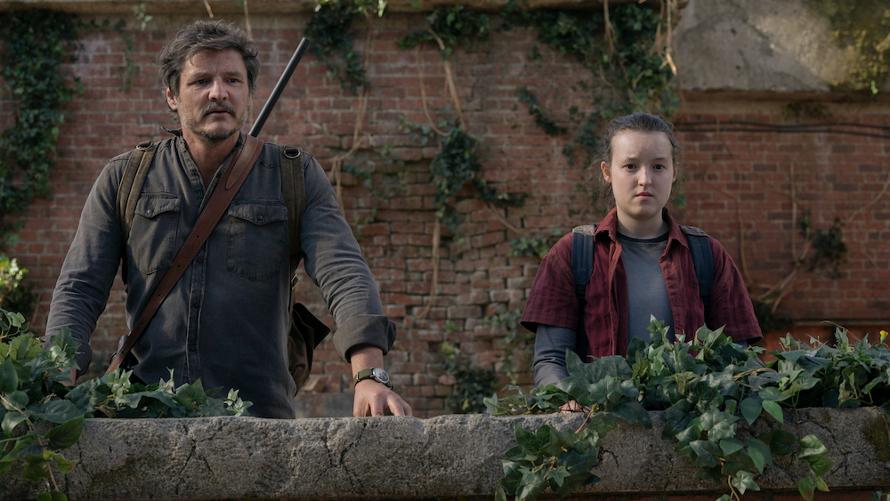
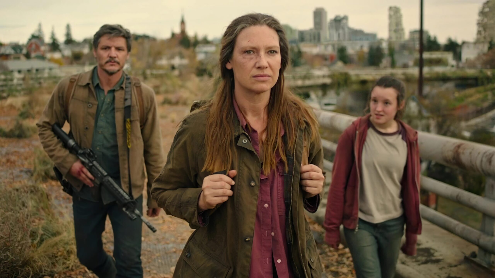

he Last of Us is a post-apocalyptic drama series that premiered on HBO in January 2023, based on the critically acclaimed video game by Naughty Dog. Created by Craig Mazin (Chernobyl) and Neil Druckmann, co-creator of the original game, the series takes viewers into a world ravaged by a fungal infection that has nearly wiped out humanity.

The story centers on Joel (played by Pedro Pascal), a hardened survivor tasked with smuggling Ellie (Bella Ramsey), a 14-year-old girl who is immune to the infection, across the dangerous and hostile remains of the United States. The bond that forms between Joel and Ellie, along with the emotional depth of their journey, is at the heart of the show.
Faithful Adaptation
Unlike many game-to-screen adaptations, The Last of Us has been praised for staying true to the source material while also expanding on its characters and narrative. The show not only re-creates the post-apocalyptic world with stunning production design and visual effects but also delves deeper into the relationships and backstories of the characters, offering more emotional complexity than the game.
Critical Acclaim
The performances of Pascal and Ramsey have received widespread praise, particularly for their chemistry and portrayal of the deep, evolving connection between Joel and Ellie. The series has been lauded for its writing, direction, and ability to capture the tension and human drama of survival in a crumbling world.
A New Benchmark for Game Adaptations
With its high production values, emotionally resonant story, and strong performances, The Last of Us has set a new standard for video game adaptations. It appeals not only to fans of the original game but also to a broader audience, becoming one of the most acclaimed TV shows of 2023.
Future Seasons
Given its success, HBO has already confirmed plans for a second season, which is expected to adapt The Last of Us Part II, the sequel to the original game, continuing the intense and emotional journey of Ellie and Joel.